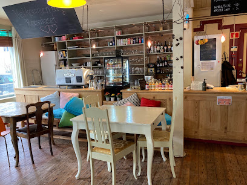
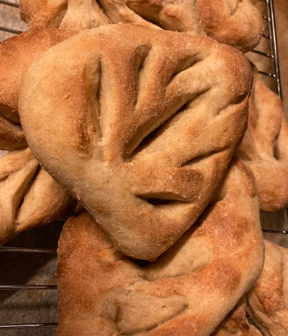
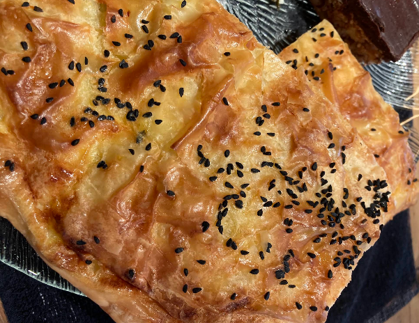
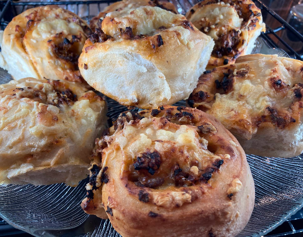
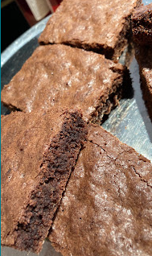
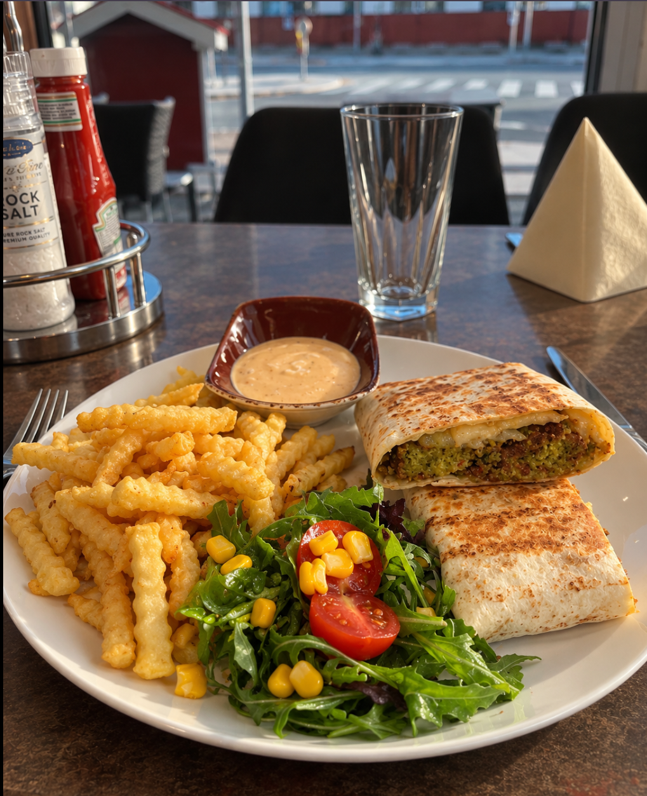

Kaffe, kunst og kveld ved elven i Evanger
Rongahuset er kafé, pub og overnatting midt i Evanger, rett ved brua og togstoppet mellom Voss og Bergen.
Book rom Åpningstider og adresseVi arrangerer også andre kvelder i løpet av året.
Kafé
Hjemmelaget mat og kaker, og god kaffe. Kaffen er lokalt brent og nymalt, og det meste av maten lager vi selv av økologiske, lokale og sesongbaserte råvarer så langt det lar seg gjøre. Det er alltid vegetarvalg på menyen.
Prøv økologisk fruktjuice fra Safteriet eller hjemmelaget gårdsis fra Alm Gard.
Når er kafeen åpen?
- Søndager
- Fra påske til advent
- Sommeren
- Som regel lørdag og søndag
- Vinteren
- Stort sett stengt mellom jul og påske
Ekstra åpningsdager står på Google.
Pub
Pubben har åpent de fleste lørdagskvelder gjennom hele året, med mindre det er for kaldt.
Bøker, kunst og møbler
I kafeen og i huset selger vi kunst, antikviteter, møbler og bruktbøker, også bordene og stolene i kafeen. Se i bokhyllene, særlig den i kafeen, eller spør oss. Bøker ligger også på Bookis.
Overnatt i Rongahuset
Gjesterom i huset, noen få skritt fra elven og togstasjonen. Se rommene, priser og ledige datoer hos oss.
Sjekk ledighet og book Se rommene Priser Greit å viteMer fra Rongahuset
Bli frivillig hos oss · Om Evanger · Kart over severdigheter · Bloggen
Bilder








Finn oss
- Adresse
- Knute Nelson-gata 15, 5707 Evanger
- Telefon
- 93 04 45 06
- E-post
- visit@rongahuset.no
Evanger ligger på Vossebanen mellom Voss og Bergen. Huset ligger ved elven og brua, ved stoppestedet.
Kart og veibeskrivelse